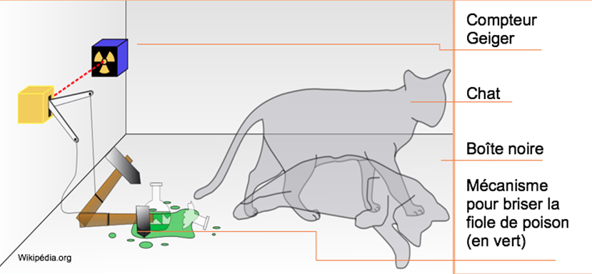

Ce domaine scientifique est fortement utilisée par les producteurs de séries pour expliquer l'inexplicable, il est donc nécessaire de la définir : La science quantique est une théorie physique qui explique le comportement des objets physiques au niveau microscopique (atome, noyau, particules).
Ni plus, ni moins...
Maintenant que nous savons de quoi nous parlons, il est nécessaire de savoir de quoi nous allons parler :
Malgré une définition ci-dessus très claire et précise, cette science englobe en réalité bien plus de sujet que ce qu'elle ne laisse paraître. Son apparition cependant est déclenchée par Max Planck en 1900 qui présente une première hypothèse, selon lui les échanges énergétiques se font par petites quantités nommées quanta. C'est d'ailleurs de là que le nom provient ! Au fur et à mesure des recherches, elle s'avère être l'une des deux théories les plus importantes du 20ème siècle, aux côtés de la théorie de la relativité générale d'Einstein.
Sa grande popularité va la faire rayonner dans tout les domaines, y compris la culture dans laquelle le mot "quantique" est utilisé pour expliquer beaucoup de choses, y compris celles qui n'ont aucun lien réel avec cette dernière...
Par ailleurs, cette science est aussi connue pour sa contre-intuitivité évidente, Feynman dit même : "Je crois pouvoir affirmer que personne ne comprend vraiment la physique quantique."
Selon la théorie quantique, les comportements des particules seraient totalement différents de ce que nous pensions jusque là et elle vous sera utile pour comprendre la suite. Pour commencer, je dois vous introduire à la notion de l'observation
Nous considérons donc un espace totalement vide, sans aucune interactions ou action de quelque sorte, et à l'intérieur, une seule particule. Cette dernière, n'ayant aucune interaction (même celle avec la lumière !) sera considérée comme "non observée" et une autre particule, ayant une (ou plus) interaction, sera considérée comme "observée".
Pourquoi utiliser ce mot ? C'est plutôt simple. Le fait que la particule aie une interaction signifie que son état sera "vérifié" ou "observé" par l'objet interagissant.
Maintenant que vous savez ce qu'observer signifie, je peux vous expliquer le fonctionnement des particules (selon la science quantique évidemment)
Dans un premier temps, reprenons notre particule "observée" (i.e. le type de particule que nous rencontrons tout le temps), cette dernier aura le comportement classique d'une particule, c'est à dire qu'elle se situe en un emplacement.
Cependant, et ça devient interessant, la particule "non-observée" se comporte comme une onde, ainsi, elle se situe en une infinité d'emplacements ! Il s'agit donc d'une superposition d'état.
Cette expérience est parfaite pour expliquer la superposition d'état. Prenons un chat, appelons le Chagal. Chagal sera placé dans une boite parfaitement isolée de toute interaction. Dans cette boite, nous trouvons aussi une fiole de poison mortelle qui peux se casser n'importe quand et totalement aléatoirement.
Dans cette boite, Chagal peux donc mourir à chaque instant ! Or, nous ne pouvons savoir si le chat est mort ou vivant, l'état du chat est inconnu, il est à la fois mort et vivant.

Cette expérience, cette fois, est particulièrement intéressante pour comprendre le fonctionnement réel des particules, car il s'agit d'une expérience plus concrète et non plus "de pensée".
Prenez des murs parallèles dont le premier est doté de deux fentes parralèles. Sur ce mur, projetez des particules et constatez où est le point d'impact de ces dernières sur un autre mur derrière.
Cette science est particulièrement exploitable dans le domaine de l'informatique :
Un Processeur quantique a une puissance de calcul exponentielle grâce à l’utilisation de "qubits" reprenant fortement le principe du chat de Schrödinger :
5 Bit sont limités à 25 = 32 possibilités, 5 Qubit peuvent prendre comme état une superposition de ces 32 états, soit plus d’un milliard d’états. Bien qu'il soit impossible de ce servir de tels processeurs dans des ordinateurs classique, cela convient parfaitement à une utilisation plus algorithmique de ces ordinateurs, notamment en l'utilisant pour développer de meilleurs intelligence artificielle, la cryptographie, la cybersécurité, les finances (pour prévoir différentes possibilités des cours boursiers en temps réel par exemple).
La science quantique est la raison pour laquelle j'ai décidé de m'intéresser à de nombreux nouveaux autres domaines de la science.
Mis à part ce côté plus que personnel, je trouve que la science quantique remet en question énormément d'autres domaines scientifiques et connaissances que l'on pensait aquises, de la même manière que la théorie de la relativité générale d'Albert Einstein nous l'a montré.